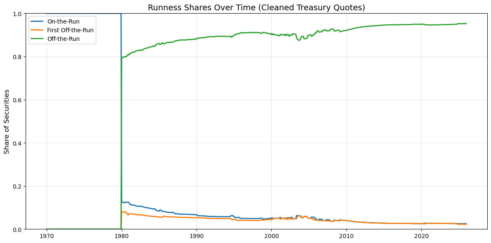
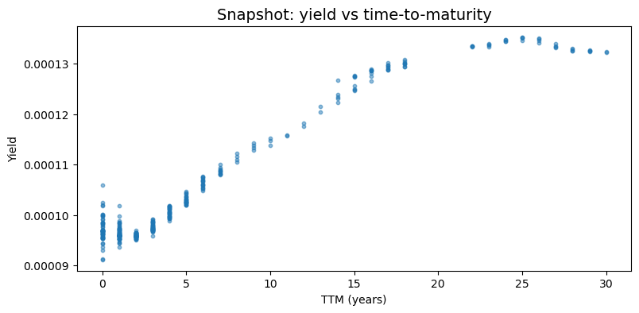
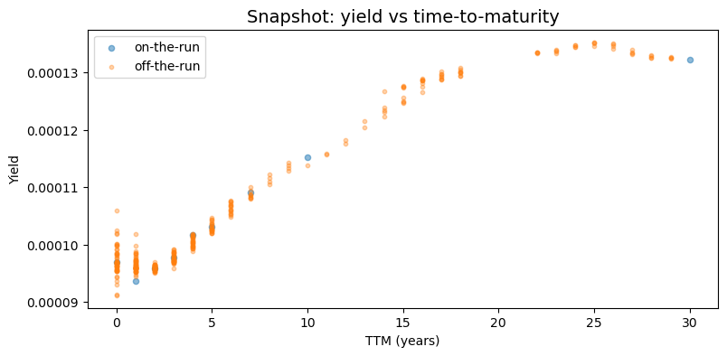
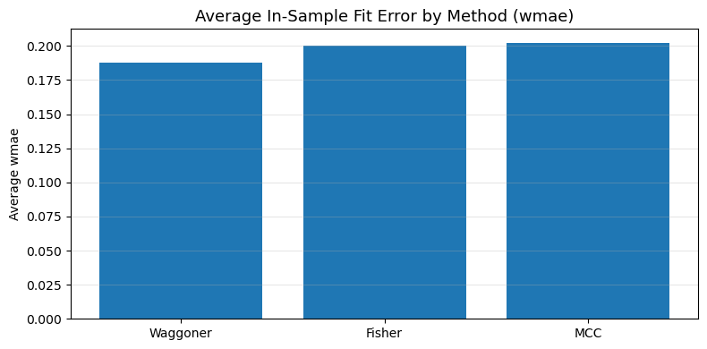

CRSP Treasury Data Overview#
The CRSP US Treasury Database is a comprehensive source of historical Treasury security data maintained by the Center for Research in Security Prices at the University of Chicago’s Booth School of Business. This section provides an essential overview of this critical dataset, which will serve as the foundation for our subsequent replication of the Gürkaynak, Sack, and Wright (2006) & Waggoner (1997) yield curve estimation methodologies.
Database Description#
The CRSP US Treasury Database provides complete historical descriptive information and market data for US Treasury securities, including:
Prices
Returns
Accrued interest
Yields
Durations
The database begins in 1961 and is updated monthly. The data is available in ASCII, Excel, and SAS formats.
import numpy as np
import pandas as pd
import matplotlib.pyplot as plt
from pathlib import Path
ROOT = Path.cwd()
PROJECT_ROOT = ROOT if (ROOT / 'src').exists() else ROOT.parent
DATA_DIR = PROJECT_ROOT / '_data'
OUTPUT_DIR = PROJECT_ROOT / '_output'
TREASURY_FILES = [
'TFZ_consolidated.parquet',
'TFZ_DAILY.parquet',
'TFZ_INFO.parquet',
'TFZ_with_runness.parquet'
]
for file in TREASURY_FILES:
df = pd.read_parquet(DATA_DIR / file)
print(f'Columns in {file}: {df.columns.tolist()}')
Columns in TFZ_consolidated.parquet: ['kytreasno', 'kycrspid', 'tcusip', 'mcaldt', 'tdatdt', 'tmatdt', 'tfcaldt', 'tfcpdt', 'tmbid', 'tmask', 'tmaccint', 'tmyld', 'price', 'tcouprt', 'itype', 'original_maturity', 'iflwr', 'years_to_maturity', 'tmduratn', 'tmretnua', 'days_to_maturity', 'callable']
Columns in TFZ_DAILY.parquet: ['kytreasno', 'kycrspid', 'mcaldt', 'tmbid', 'tmask', 'tmaccint', 'tmyld', 'price']
Columns in TFZ_INFO.parquet: ['kytreasno', 'kycrspid', 'tcusip', 'tdatdt', 'tmatdt', 'tcouprt', 'tfcpdt', 'itype', 'original_maturity']
Columns in TFZ_with_runness.parquet: ['kytreasno', 'kycrspid', 'tcusip', 'mcaldt', 'tdatdt', 'tmatdt', 'tfcaldt', 'tfcpdt', 'tmbid', 'tmask', 'tmaccint', 'tmyld', 'price', 'tcouprt', 'itype', 'original_maturity', 'iflwr', 'years_to_maturity', 'tmduratn', 'tmretnua', 'days_to_maturity', 'callable', 'run']
1. Raw CRSP Treasury Inputs#
The CRSP US Treasury database is delivered in several “building block” files:
TFZ_DAILY: daily quotesTFZ_INFO: bond characteristicsTFZ_consolidated: merged quotes + characteristicsTFZ_with_runness: merged quotes + characteristics + runness indicators
For our analysis, we will focus on the TFZ_with_runness file, as it contains all of the required fields for curve estimation in one location: quotes, bond characteristics, duration, maturity, and runness.
#Peek at the TFZ_with_runness raw file
tfz_with_runness_raw = pd.read_parquet(DATA_DIR / 'TFZ_with_runness.parquet')
display(tfz_with_runness_raw.head())
| kytreasno | kycrspid | tcusip | mcaldt | tdatdt | tmatdt | tfcaldt | tfcpdt | tmbid | tmask | ... | tcouprt | itype | original_maturity | iflwr | years_to_maturity | tmduratn | tmretnua | days_to_maturity | callable | run | |
|---|---|---|---|---|---|---|---|---|---|---|---|---|---|---|---|---|---|---|---|---|---|
| 0 | 200641.0 | 19700312.400000 | 912793DC | 1970-02-27 | 1969-09-10 | 1970-03-12 | 0 | NaT | 99.763474 | 99.787666 | ... | 0.0 | 4.0 | 1.0 | 1.0 | 0.0 | 13.0 | 0.006565 | 13 | False | 0 |
| 1 | 200634.0 | 19700205.400000 | 912793CW | 1970-01-30 | 1969-08-07 | 1970-02-05 | 0 | NaT | 99.866669 | 99.883331 | ... | 0.0 | 4.0 | 0.0 | 1.0 | 0.0 | 6.0 | 0.0061 | 6 | False | 0 |
| 2 | 200635.0 | 19700213.400000 | 912793CX | 1970-01-30 | 1969-08-14 | 1970-02-13 | 0 | NaT | 99.700554 | 99.727776 | ... | 0.0 | 4.0 | 1.0 | 1.0 | 0.0 | 14.0 | 0.006317 | 14 | False | 0 |
| 3 | 200636.0 | 19700215.104000 | 912810AE | 1970-01-30 | 1965-01-15 | 1970-02-15 | 0 | 1965-08-15 | 99.96875 | 100.03125 | ... | 4.0 | 1.0 | 5.0 | 1.0 | 0.0 | 16.0 | 0.008491 | 16 | False | 0 |
| 4 | 200637.0 | 19700219.400000 | 912793CY | 1970-01-30 | 1969-08-21 | 1970-02-19 | 0 | NaT | 99.580559 | 99.610001 | ... | 0.0 | 4.0 | 0.0 | 1.0 | 0.0 | 20.0 | 0.006479 | 20 | False | 0 |
5 rows × 23 columns
Key columns we care about downstream:#
The cleaning code focuses on:
Identifiers: date, CUSIP, CRSP IDs
Bond characteristics: coupon, issue date, maturity date, instrument type
Quotes: bid, ask, yield, accrued interest
Maturity measures: time-to-maturity in days/years
Runness: on-the-run / off-the-run indicators (used for sample selection)
#compact overview
tfz_compact = (
tfz_with_runness_raw.dtypes
.astype(str)
.reset_index()
.rename(columns={'index': 'column', 0: 'dtype'})
.sort_values('column')
.reset_index(drop=True)
)
display(tfz_compact)
| column | dtype | |
|---|---|---|
| 0 | callable | bool |
| 1 | days_to_maturity | int64 |
| 2 | iflwr | Float64 |
| 3 | itype | Float64 |
| 4 | kycrspid | string |
| 5 | kytreasno | Float64 |
| 6 | mcaldt | datetime64[ns] |
| 7 | original_maturity | Float64 |
| 8 | price | Float64 |
| 9 | run | int64 |
| 10 | tcouprt | Float64 |
| 11 | tcusip | string |
| 12 | tdatdt | datetime64[ns] |
| 13 | tfcaldt | int64 |
| 14 | tfcpdt | datetime64[ns] |
| 15 | tmaccint | Float64 |
| 16 | tmask | Float64 |
| 17 | tmatdt | datetime64[ns] |
| 18 | tmbid | Float64 |
| 19 | tmduratn | Float64 |
| 20 | tmretnua | Float64 |
| 21 | tmyld | Float64 |
| 22 | years_to_maturity | Float64 |
Cleaning Pipeline via tidy_CRSP_treasury.py#
The file tidy_CRSP_treasury.py implements a small explicit pipeline to prepare the TFZ_with_runness.parquet file for curve estimation via the following steps:
Load*
TFZ_with_runness.parquetStandardize column names (rename CRSP-style names to readable ones)
Add derived fields used in later curve work:
mid price = (bid + ask) / 2
time-to-maturity (days & years)
sanity-check flags (valid quotes, nonnegative maturity)
runness indicators (on-the-run, first-off, off-the-run)
maturity flags (<30d, <3m, <1y, 20y post-1996)
instrument type flags (bond/note/bill) and “flower bond” flag
Select the minimal relevant columns
Write
tidy_CRSP_treasury.parquetto the project data directory (_data)
Run the pipeline end-to-end:#
import tidy_CRSP_treasury
tidy_CRSP_treasury.main(DATA_DIR, DATA_DIR)
df_tidy = pd.read_parquet(DATA_DIR / "tidy_CRSP_treasury.parquet")
display(df_tidy.head())
Wrote tidy CRSP Treasury data set saved to: /Users/phoebefingold/FINM_Repo/FINM_32900/p14_gurkaynak_sack_wright_2007/_data/tidy_CRSP_treasury.parquet
| date | cusip | kytreasno | kycrspid | issue_date | maturity_date | coupon | first_coupon_date | itype | iflwr | ... | is_under_1y | is_20y | is_20yr_post_1996 | is_bond | is_note | is_bill | is_flower | valid_quote | nonnegative_maturity | clean | |
|---|---|---|---|---|---|---|---|---|---|---|---|---|---|---|---|---|---|---|---|---|---|
| 0 | 1970-01-30 | 912793BQ | 200639.0 | 19700228.400000 | 1969-02-27 | 1970-02-28 | 0.0 | NaT | 4.0 | 1.0 | ... | True | False | False | False | False | True | False | True | True | True |
| 1 | 1970-01-30 | 912793BR | 200646.0 | 19700331.400000 | 1969-04-01 | 1970-03-31 | 0.0 | NaT | 4.0 | 1.0 | ... | True | False | False | False | False | True | False | True | True | True |
| 2 | 1970-01-30 | 912793CG | 200653.0 | 19700430.400000 | 1969-04-29 | 1970-04-30 | 0.0 | NaT | 4.0 | 1.0 | ... | True | False | False | False | False | True | False | True | True | True |
| 3 | 1970-01-30 | 912793CH | 200660.0 | 19700531.400000 | 1969-05-29 | 1970-05-31 | 0.0 | NaT | 4.0 | 1.0 | ... | True | False | False | False | False | True | False | True | True | True |
| 4 | 1970-01-30 | 912793CU | 200666.0 | 19700630.400000 | 1969-06-26 | 1970-06-30 | 0.0 | NaT | 4.0 | 1.0 | ... | True | False | False | False | False | True | False | True | True | True |
5 rows × 35 columns
Step-by-step tour via Intermediate DataFrames#
Below we walk through the exact functions of tidy_CRSP_treasury.py to demonstrate how the raw data gets transformed into the curve estimation-ready data
df0 = tidy_CRSP_treasury.load_CRSP_treasury_data(DATA_DIR)
df1 = tidy_CRSP_treasury.standardize_column_names(df0)
df2 = tidy_CRSP_treasury.add_relevant_fields(df1)
df3 = tidy_CRSP_treasury.select_relevant_cols(df2)
print("TFZ raw:", df0.shape)
print("standardized:", df1.shape)
print("with derived fields:", df2.shape)
print("selected cols (tidy):", df3.shape)
df3.head()
TFZ raw: (145747, 23)
standardized: (145747, 23)
with derived fields: (145747, 39)
selected cols (tidy): (145747, 35)
| date | cusip | kytreasno | kycrspid | issue_date | maturity_date | coupon | first_coupon_date | itype | iflwr | ... | is_under_1y | is_20y | is_20yr_post_1996 | is_bond | is_note | is_bill | is_flower | valid_quote | nonnegative_maturity | clean | |
|---|---|---|---|---|---|---|---|---|---|---|---|---|---|---|---|---|---|---|---|---|---|
| 6 | 1970-01-30 | 912793BQ | 200639.0 | 19700228.400000 | 1969-02-27 | 1970-02-28 | 0.0 | NaT | 4.0 | 1.0 | ... | True | False | False | False | False | True | False | True | True | True |
| 14 | 1970-01-30 | 912793BR | 200646.0 | 19700331.400000 | 1969-04-01 | 1970-03-31 | 0.0 | NaT | 4.0 | 1.0 | ... | True | False | False | False | False | True | False | True | True | True |
| 27 | 1970-01-30 | 912793CG | 200653.0 | 19700430.400000 | 1969-04-29 | 1970-04-30 | 0.0 | NaT | 4.0 | 1.0 | ... | True | False | False | False | False | True | False | True | True | True |
| 54 | 1970-01-30 | 912793CH | 200660.0 | 19700531.400000 | 1969-05-29 | 1970-05-31 | 0.0 | NaT | 4.0 | 1.0 | ... | True | False | False | False | False | True | False | True | True | True |
| 78 | 1970-01-30 | 912793CU | 200666.0 | 19700630.400000 | 1969-06-26 | 1970-06-30 | 0.0 | NaT | 4.0 | 1.0 | ... | True | False | False | False | False | True | False | True | True | True |
5 rows × 35 columns
3. Sanity Checks#
The cleaning step creates a few flags that prevent downstream errors:
valid_quote: bid/ask are finite, positive, andask >= bidnonnegative_maturity: time-to-maturity is finite and nonnegativeclean: conjunction of the above
These are not necessarily “final sample selection” rules. Rather, they help ensure we can safely compute mid prices, maturities, and do curve estimation without obvious data errors.
#Check problematic rows (if they exist)
problematic_rows = df2.loc[~df2['clean'], ['date', 'cusip', 'bid', 'ask','maturity_date', 'ttm_days', 'valid_quote', 'nonnegative_maturity']]
display(problematic_rows.head())
| date | cusip | bid | ask | maturity_date | ttm_days | valid_quote | nonnegative_maturity |
|---|
Above, we observe that the cleaning process removed all problematic data points.
4. Runness Indicators & Maturity Flags#
In our cleaning process, we added runness indicators & maturity flags to easily align with GSW and Waggoners’ estimation processes:
Runness Indicators:
is_on_the_run:run == 0is_first_off_the_run:run == 1is_off_the_run:run >= 2
Maturity Flags:
We also create maturity flags (e.g.,
<30d,<1y) that are common in curve estimation sample rules (many papers exclude ultra-short maturities, and some handle 20-year reintroductions separately).
Waggoner-specific Flags:
Exclude bills with less than 30 days to maturity:
is_bill & is_under_30dExclude notes/bonds with less than 1 year to maturity:
(is_note | is_bond) & is_under_1yExclude flower bonds:
is_flowerExclude callable bonds: add a callable flag when available from bond characteristics, then filter on it (for example
is_callable)
This framing makes it clear that the paper’s sample restrictions are implemented as reusable boolean flags rather than hard-coded one-off filters.
#Shares by runness category
runness_shares = pd.Series({
'is_on_the_run': df2['is_on_the_run'].mean(),
'is_first_off_the_run': df2['is_first_off_the_run'].mean(),
'is_off_the_run': df2['is_off_the_run'].mean(),
})
display(runness_shares.to_frame('share'))
| share | |
|---|---|
| is_on_the_run | 0.122438 |
| is_first_off_the_run | 0.035603 |
| is_off_the_run | 0.841959 |
#Shares over time (monthly)
tmp = df2.loc[df2['clean']].copy()
tmp['month'] = pd.to_datetime(tmp['date']).dt.to_period('M').dt.to_timestamp()
monthly = tmp.groupby('month')[['is_on_the_run', 'is_first_off_the_run', 'is_off_the_run']].mean()
fig, ax = plt.subplots(figsize=(12,6))
ax.plot(monthly.index, monthly['is_on_the_run'], label='On-the-Run', linewidth=2)
ax.plot(monthly.index, monthly['is_first_off_the_run'], label='First Off-the-Run', linewidth=2)
ax.plot(monthly.index, monthly['is_off_the_run'], label='Off-the-Run', linewidth=2)
ax.set_title('Runness Shares Over Time (Cleaned Treasury Quotes)', fontsize=14)
ax.set_ylabel('Share of Securities', fontsize=12)
ax.set_xlabel('')
ax.set_ylim(0,1)
ax.legend()
ax.grid(alpha=0.3)
plt.tight_layout()
plt.show()

Above, we observe how before the early 1980s, all cleaned quotes are classified as “on-the-run.” This reflects limitations in historical issuance coverage & runnness identification in the early CRSP data. After 1980, the cross-section stabilizes, with ~80-95% of bonds off-the-run, and small shares of on-the-run and first-off-the-run securities.
5. Yield Curve Snapshot#
To connect our cleaned dataset to the analysis code, we can build a quick yield curve snapshot figure via GSW’s implementation. This is not a full GSW curve estimation, but it illustrates why we want clean maturities, clean quotes, and runness labels for estimation.
# Choose a representative date (latest in sample)
snap_date = pd.to_datetime(df_tidy['date']).max()
snap = df_tidy.loc[pd.to_datetime(df_tidy['date']) == snap_date].copy()
# Basic "safe" screen for plotting
snap = snap.loc[
snap['clean'] &
(~snap['is_flower']) &
(~snap['is_under_30d']) &
(~snap['is_20yr_post_1996'])
]
print('snapshot date:', snap_date.date())
print('number of securities:', len(snap))
# Scatter: yield vs maturity (years)
fig, ax = plt.subplots(figsize=(9,4))
ax.scatter(snap['ttm_years'], snap['yield'], s=10, alpha=0.5, label='all (screened)')
ax.set_title('Snapshot: yield vs time-to-maturity', fontsize=14)
ax.set_xlabel('TTM (years)')
ax.set_ylabel('Yield')
plt.show()
snapshot date: 2026-01-30
number of securities: 368

The first figure plots yield against time-to-maturity for all screened securities on the most recent date in the sample. Several features confirm the integrity of the cleaned dataset:
The cross section spans the full maturity spectrum, confirming that the time-to-maturity calculation and maturity filtering steps in the pipeline are functioning as intended
The curve has a smooth upward-sloping shape across most maturities, consistent with a typical positive term premium environment
An absence of extreme outliers or discontinuities reflects the effectiveness of the cleaning flags
Tight clustering of points at key maturity buckets reflects Treasury issuance conventions
#on-the-run vs off-the-run on same snapshot
fig, ax = plt.subplots(figsize=(9,4))
on = snap.loc[snap['is_on_the_run']]
off = snap.loc[snap['is_off_the_run']]
ax.scatter(on['ttm_years'], on['yield'], s=20, alpha=0.5, label='on-the-run')
ax.scatter(off['ttm_years'], off['yield'], s=10, alpha=0.35, label='off-the-run')
ax.set_title('Snapshot: yield vs time-to-maturity', fontsize=14)
ax.set_xlabel('TTM (years)')
ax.set_ylabel('Yield')
ax.legend()
plt.show()

The second figure separates on-the-run and off-the-run securities within the same snapshot and highlights one of our motivations for constructing runness classifications in the cleaning pipeline. On-the-run securities are fewer in number and typically cluster at standard benchmark maturities. Off-the-run securities are much more numerous and fill in the maturity spectrum between benchmarks. In many maturity buckets, off-the-run securities exhibit slightly higher yields relative to nearby on-the-run bonds. This cross-sectional dispersion is exactly why runnness indicators are valuable inputs for term structure analysis.
6. The Output & How It Is Used#
The pipeline writes the tidy_CRSP_treasury.parquet file. This tidy dataset is intended to be the single cleaned input for later steps, including:
filtering to a curve-estimation sample (e.g., exclude bills / flower bonds / ultra-short maturities)
estimating curve performance via Weighted Mean Absolute Errors (WMAE) & Hit Rates
analyze differences between on-the-run and off-the-run securities
In other words, this tidy dataset serves as the foundation for all downstream term structure analysis. By consolidating cleaning and feature engineering into a single pipeline, later code can focus on estimation and evaluation rather than repeated data preparation.
7. Downstream Analysis Example: Fit Error Metrics#
To connect this notebook to the replication code, we can inspect model fit metrics generated by:
run_mcc_yield_curve.pyrun_fisher_yield_curve.pyrun_waggoner_yield_curve.py
These scripts write error summaries into _data (for example mcc_error_metrics.csv). Below we load whichever files are available and compare average in-sample error across methods.
metrics_files = {
'MCC': DATA_DIR / 'mcc_error_metrics.csv',
'Fisher': DATA_DIR / 'fisher_error_metrics.csv',
'Waggoner': DATA_DIR / 'waggoner_error_metrics.csv',
}
frames = []
for method, path in metrics_files.items():
if path.exists():
tmp = pd.read_csv(path)
tmp['method'] = method
frames.append(tmp)
if frames:
metrics = pd.concat(frames, ignore_index=True)
display(metrics.head())
numeric_cols = metrics.select_dtypes(include=[np.number]).columns.tolist()
preferred = [c for c in ['wmae', 'mae', 'rmse'] if c in numeric_cols]
score_col = preferred[0] if preferred else (numeric_cols[0] if numeric_cols else None)
if score_col is not None:
summary = (
metrics.groupby('method', as_index=False)[score_col]
.mean()
.sort_values(score_col)
.rename(columns={score_col: f'avg_{score_col}'})
)
display(summary)
fig, ax = plt.subplots(figsize=(8, 4))
ax.bar(summary['method'], summary[f'avg_{score_col}'])
ax.set_title(f'Average In-Sample Fit Error by Method ({score_col})', fontsize=13)
ax.set_ylabel(f'Average {score_col}')
ax.grid(axis='y', alpha=0.3)
plt.tight_layout()
plt.show()
else:
print('Error-metric files found, but no numeric score column was detected.')
else:
print(
'No error metric files found yet. Run curve tasks first, e.g. '
'`doit build_mcc_yield_curve build_fisher_yield_curve build_waggoner_yield_curve`.'
)
| bucket | wmae | hit_rate | method | |
|---|---|---|---|---|
| 0 | 0-1 | 0.027273 | 0.340641 | MCC |
| 1 | 1-3 | 0.106646 | 0.450051 | MCC |
| 2 | 3-5 | 0.271146 | 0.273383 | MCC |
| 3 | 5-10 | 0.421262 | 0.200919 | MCC |
| 4 | >10 | 0.322544 | 0.288101 | MCC |
| method | avg_wmae | |
|---|---|---|
| 2 | Waggoner | 0.187894 |
| 0 | Fisher | 0.200445 |
| 1 | MCC | 0.202326 |
